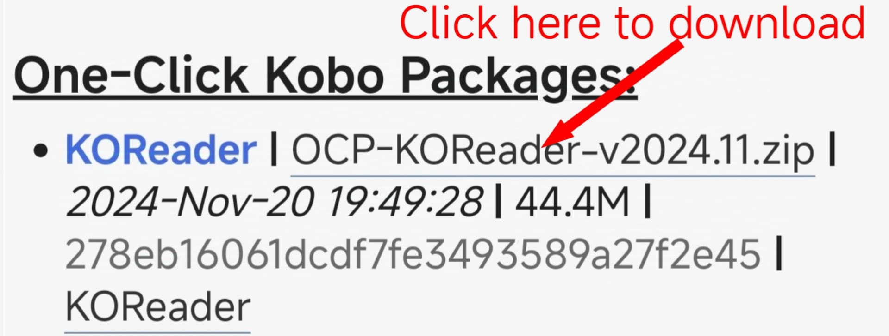

Video how to install koreader

In this video we will learn in detail how to install koreader on your e-reader in a simple way
KOReader is a document viewer for E Ink devices. Supported fileformats include EPUB, PDF, DjVu, XPS, CBT, CBZ, FB2, PDB, TXT, HTML, RTF, CHM, DOC, MOBI and ZIP files. It’s available for Kindle, Kobo, PocketBook, Android and desktop Linux.
Install koreader on your e-readerTo install koreader correctly, follow these steps
You must download the koreader file.
Download koreaderChoose the appropriate koreader for your e-reader.Choose the latest version of koreader and download it.
In this step you will need a computer, connect your e-reader to the computer and allow it to share files with the computer, after you have downloaded the appropriate koreader file for your e-reader you will also need the koreader installation file on your e-reader if you are using:
Windows You must download this file to install.
Download installation file
Now that you have downloaded the koreader file and the installation file, put the two files in the same folder, select the installation file, right click on it, choose run with PowerShell, then press 0, press Enter and wait for the installation to complete.
If you use linux
linux You must download this file to install.
Download installation file
Now that you have downloaded the koreader file and the installation file, put the two files in the same folder, select the installation file, right click on it, choose run as a Program, then press 0, press Enter and wait for the installation to complete.
After the installation is complete, disconnect your e-reader from the USB and restart the device.Then nicklemenu will appear in the lower right corner click on it and choose koreader Congratulations, you have installed Koreader.
In this video we will learn in detail how to install koreader on your e-reader in a simple way
KOReader is an open-source eBook reader application that supports many eReaders and systems. It offers several features that make it an excellent choice for digital reading enthusiasts:
Features of KOReader:
1. Multiple file format support:
It supports a wide range of book formats such as EPUB, PDF, MOBI, DJVU, FB2, TXT, and more.
2. Excellent PDF performance:
It includes powerful tools to enhance the PDF reading experience, such as text reflow, automatic margin cropping, and advanced zooming options.
3. Dictionary and translation support:
The app can integrate with external dictionaries and supports text translation through the internet.
4. Customization options:
Customize fonts, sizes, margins, and colors. Night reading mode and brightness adjustments are available to reduce eye strain.
5. Open-source and free:
The app is completely free and is regularly updated by the developer community.
6. Notes and annotations support:
Allows adding notes and annotations to texts.
7. Cloud service integration:
Supports syncing books with services like Dropbox and Google Drive.
8. Dual-screen mode:
Ideal for reading on larger screens or comparing texts.
9. Touch and gesture support:
Provides customizable gestures for navigating pages and adjusting settings.
10. Cross-platform compatibility:
Works on Kindle, Kobo, PocketBook devices, as well as Android and Linux systems.
11. Library management:
Offers an easy interface for managing books, creating lists, and organizing files.
Why You Should Use KOReader:
1. Versatility with File Formats:
KOReader supports a wide range of eBook formats (EPUB, PDF, MOBI, etc.), ensuring you can read almost any file without conversion.
2. Enhanced PDF Reading:
Its advanced tools, such as text reflow and margin cropping, make reading PDFs much easier, even on small screens.
3. Full Customization:
KOReader allows you to tailor your reading experience with adjustable fonts, themes, and night mode for reduced eye strain.
4. Open Source and Free:
Being open-source, it’s free to use and constantly improved by a dedicated community, with no hidden costs.
5. Productivity Features:
Take notes, highlight text, and use built-in dictionaries or translation tools to enhance your understanding of the content.
6. Cross-Platform Compatibility:
Whether you’re using Kindle, Kobo, PocketBook, or an Android device, KOReader works seamlessly across platforms.
7. Cloud Integration:
Sync your books and notes with popular cloud services like Dropbox and Google Drive for easy access.
8. Lightweight and Efficient:
KOReader is optimized for speed and low resource usage, ensuring smooth performance even on older devices.
9. Community-Driven Development:
With active updates and user feedback, KOReader continues to evolve with new features and improvements.
10. Better Control Over Reading:
It offers advanced navigation tools, such as gesture controls and dual-screen mode, for an intuitive and enjoyable reading experience.

Copyright © 2050 koreader4all - All rights reserved